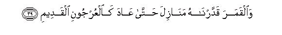
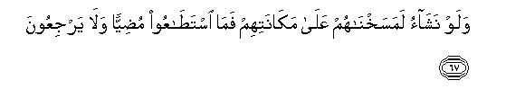

بسم الله الرحمن الرحيم
Sayyid Abul Ala Maududi - Tafhim al-Qur'an - The Meaning of the Qur'an
 36.
Surah Ya Sin
36.
Surah Ya Sin
The Surah takes its name from the two letters of the alphabet with which it begins.
A study of the style shows that it was either sent down during the last stage of the middle Makkan period, or it is one of those Surahs, which were sent down during the last stage of the Holy Prophet's stay at Makkah.
The object of the discourse is to warn the Quraish of the consequences of not believing in the Prophethood of Muhammad (may Allah's peace and blessings be upon him) and of resisting and opposing it with tyranny, ridicule and mockery. The aspect of the warning is dominant and conspicuous although along with repeatedly giving the warnings, arguments also have been given for the correct understanding by the people.
Arguments have been given for three things: (1) For Tauhid, from the signs of the universe and from common sense; (2) for the Hereafter, from the signs of the universe, from common sense and from man's own existence itself; and (3) for the Prophethood of the Prophet Muhammad, from the fact that he was facing all kinds of hardships in the preaching of his message without any selfish motive, and from this that whatever he was inviting the people to was rational and reasonable, accepting which was in the people's own interest.
On the strength of these arguments, themes of reprobation, reproof and warning have been presented repeatedly in a highly forceful manner, so that hearts are shaken up and those which have any capacity for accepting the truth left in them should not remain unmoved.
Imam Ahmad, Abu Daud, Nasai, Ibn Majah and Tabarani have related on the authority of Hadrat Ma'qil bin Yasar that the Holy Prophet said:"Surah Ya Sin is the heart of the Qur'an."This is similar to describing the Surah Al Fatiha has the Umm al Qur'an (the essence or core of the Qur'an), because Al Fatihah contains the sum and substance of the teaching of the whole Quran. The Surah Ya Sin has been called the throbbing heart of the Qur'an because it presents the message of the Qur'an in a most forceful manner, which breaks the inertness and stirs the spirit of man to action.
Again Imam Ahmad, Aba Da'ud and Ibn Majah have related from the same Ma'qil bin Yasar that the Holy Prophet said: "Recite Surah Ya Sin to the dying ones among you." The object is not only to revive and refresh the whole Islamic creed in the mind of the dying person but also bring before him, in particular, a complete picture of the Hereafter so that he may know what stages he would have to pass through after crossing the stage of this worldly life. In view of this, it would be desirable that along with the recitation of the Surah Ya Sin its translation also is made for the benefit of the person who does not know Arabic so that the purpose of the admonition is duly fulfilled.

In the name of Allah, the Compassionate, the Merciful.
[1-6] Ya Sin.1 By the wise Qur'an, you are indeed one of the Messengers,2 are on the Straight Way, (and this Qur'an) is the Revelation of the All-Mighty, the All-Merciful One,3 so that you may warn a people whose forefathers were not warned, and so, they live in heedlessness.4
[7-11] Most of these people have already deserved the decree of torment; therefore, they do not believe.5 We have put on their necks fetters which reach to their chins, so they stand with heads upright.6 We have set a barrier before them and a barrier behind them: We have covered them, so they cannot see anything.7 It is all the same for them whether you warn them or warn them not, they would not believe.8 You can only warn him who follows the admonition and fears the Merciful God, though he cannot see Him. Give him the good news of forgiveness and of a generous reward.
[12] We shall certainly one day raise the dead to life. We are recording all the deeds they have done and also that which they have left behind.9 We have preserved everything in an open Book.
[13-15] Tell them, for instance, the story of the people of the habitation when the Messengers came to it.10 We sent to them two Messengers and they denied both. Then. We sent a third one to strengthen them, and they all said, "We have been sent to you as Messengers." The people said, "You are no more than men like us,11 and the Merciful God has sent down nothing.”12 You are only telling a lie."
[16-19] The Messengers said, "Our Lord knows that we have indeed been sent as Messengers to you and our only responsibility is to convey the message plainly"13 The people said, "We regard you as an evil omen for ourselves. If you do not desist (froth this), we shall stone you, and you will receive a painful punishment from us."14 The Messengers replied, "Your evil omen is with your own selves.15 Do you say this because you have been admonished? The fact is that you are a people who have transgressed all limits"16
[20-21] In the meantime a man came running from the remote part of the city, and he said, "O my people, follow the Messengers: follow those who do not ask any reward of you and are on the Right Way.”17

[22-25] “Well, why should I not worship the Being Who has created me, and to whom all of you have to return?18 Should I take other gods than Him? Whereas if the Merciful God intends to harm me, their intercession cannot avail me anything, nor can they rescue me.19 If I do so,20 I would be involved in manifest error. I have believed in your Lord:21 so, you also should listen to me.”

[26-27] (Consequently, they killed the man and) it was said to him, "Enter Paradise."22 He said, "Would that my people knew how my Lord has forgiven me and included me among the honored ones!"23
[28-32] After him We did not send any army against his people from heaven nor was it needful for Us to send one. There only occurred a single blast and they all became extinct.24 Alas for the servants! There came no Messenger to them but they scoffed at him. Have they not seen many nations We have destroyed before them, and they never returned to them?25 One day they will all be presented before Us!
[33-36] The26 dead land is a Sign for these people.27 We gave it life and produced grain from it, which they eat. We made gardens of date-palms and grapes in it and caused springs to gush out of it so that they may eat fruits thereof. It is not their hands which have made all this.28 Do they not then give thanks?29 Glorified is He30 Who created in pairs all species, whether of vegetable kingdom or of their own (i.e., human) kind, or of those things of which they know nothing.31

[37-40] Another Sign for them is the night: We remove the day from above it, and they are covered in darkness.32 And the Sun: it is moving to its place of rest.33 This is the decree of the All-Mighty, All-Knowing God. And the Moon: We have determined stages for it till it again becomes like an old dry palm-branch.34 Neither is it possible for the Sun to overtake the Moon,35 nor for the night to outstrip the day.36 Each is gliding in its own orbit.37
[41-44] Yet another Sign for them is that We bore their progeny in a laden vessel,38 and then made for them similar other vessels which they board.39 If We please We can drown them when they would have no one to hear their cry, nor would they be rescued in any way. It is Our Mercy alone which sustains them and enables them to enjoy life till an appointed time.40
[45-47] When it is said to them, "Guard against the end which is before , you and which you have left behind,41 so that you are shown mercy," (they pay no heed), whatever Revelation of the Revelations of their Lord reaches them, they turn away from it.42 And when it is said to them, "Spend also in the way of Allah out of what He has given you," those who disbelieve say to those who believe, "Should we feed those whom Allah Himself could have fed had He so willed? You have utterly gone astray!"43
[48-53] They44 say, "When will the threat of Resurrection be carried out? Tell us if you are truthful."45 In fact, what they are awaiting is a single blast, which will suddenly seize them while they will be disputing (about their worldly affairs). Then they will neither be able to make a will, nor be able to return to their families.46 Then a Trumpet shall be blown, and they shall come out of their graves forthwith to present themselves before their Lord.47 Bewildered they will say, "Ah! who has roused us from our sleeping-place?"48 "This is the same which the Merciful God had promised and the Messengers had spoken the truth."49 There shall only be a single loud blast and they shall be presented before Us, all together.
[54-64] On this Days50 no one will be wronged in the least, and you will be rewarded exactly according to what you had been doing. (On this Day) the inmates of Paradise are absorbed in enjoying bliss51 They and their wives are in thick shades, reclining upon couches: they have all kinds of tasteful foods and whatever they may desire. They have been greeted with `Peace' from the Merciful Lord. And O criminals, get you apart today!52 Children of Adam, did I not enjoin on you not to worship Satan, who is your open enemy, but to worship Me alone? This is the Straight Way.53 Yet, in spite of this, he led astray a great multitude of you: did you not have common sense?54 This is the same Hell with which you used to be threatened. Now be its fuel in consequence of your disbelief in the world.
[65] On that Day We shall seal their tongues: their hands will speak to Us, and their feet will testify as to what they had been earning in the world.55


[66-68] If We will, We can put out their eyes: then let them strive to seek the way. From where will they see it? If We please, We can so transform them in their places that they would neither be able to go forward nor turn backward.56 Whomsoever We grant a long life, We just reverse him in nature and constitution.57 Do they not understand anything (from this)?
[69-70] We have not taught this (Prophet) poetry nor does poetry behoove him.58 This is only an Admonition and a lucid poetry Book, so that he may warn everyone who is living59 and the charge is established against the disbelievers.
[71-76] Do they not see that out of what Our hands have fashioned,60 We have created for them cattle of which they are masters? We have so subjected these to them that they ride on some and eat the flesh of others, and in them there are different advantages and drinks for them. Then, will they not be grateful?61 Yet, they have set up other gods, apart from Allah, hoping that they would be helped. They cannot help them at all: yet do these people stand as an ever ready army at their service.62 Well, let not their words grieve you: We know whatever they hide and whatever they reveal.63

[77-83] Does64 not man see that We created him from a sperm-drop, and yet he stands forth as a manifest adversary?65 Now he strikes out likenesses for Us66 and forgets his own creation.67 He says, "Who will give life to these bones when they are rotten?" Tell him, "He Who created them in the first instance will give them life again: He is skilled at every kind of creation. He it is Who created fire for you from the green tree, with which you kindle your fuel.68 Is not He, Who created the heavens and the earth, able to create the like of them ? Why not, when He is the skillful Creator. When He intends anything, He needs only say: 'Be', and it is. Glorified is He in Whose hand is the absolute control of everything, and to Him you shall all be returned.
1Ibn 'Abbas, 'Ikrimah, Dahhak, Hasan Basri and Sufyan bin 'Uyainah have opined that it means, "O man", or "O person"; some other commentators have regarded it as an abbreviation of "Ya Sayyid" as well, which, according to this interpretation, would be an address to the Holy Prophet.
2To begin a discourse like this does not mean that the Holy Prophet, God forbid, had some doubt about his Prophethood, and Allah had to say this in order to reassure him of it. But the reason is that the disbelieving Quraish at that time were most vehemently refusing to believe in his Prophethood; therefore. Allah at the very beginning of the discourse has said: "You are indeed one of the Messengers," which implies that the people who deny your Prophethood, are misled and mistaken. To further confirm the same, an oath has been taken by the Qur'an, and the word "wise" has been used as an epithet of the Qur'an, which means this: "An obvious proof of your being a Prophet is this Qur'an, which is fill of wisdom, This itself testifies that the person who is presenting such wise revelations is most surely a Messenger of God. No man has the power to compose such revelations. The people who know Muhammad (upon whom be Allah's peace and blessings) can never be involved in the misunderstanding that he is himself forging these discourses, or reciting them after having learned them from another man." (For further explanation, see Yunus: 16-17, 37-39; Bani Isra'il: 88; An Naml: 75; AI-Qasas: 44-46, 85-87; AI-'Ankabut: 49-51; Ar-Rum: 1-5 and the relevant E.N.'s).
3Here, two of the attributes of the Sender of the Qur'an have been mentioned. First, that He is All-Mighty; second, that He, is All-Merciful. The first attribute is meant to impress the reality that the Qur'an is not the counsel of a powerless preacher, which if you overlook or ignore, will not bring any harm to you; but this is the Edict of that Owner of the Universe, Who is All-Mighty, Whose decrees cannot be withheld from being enforced by any power, and Whose grasp cannot be avoided by anyone. The second attribute is meant to make one realize that it is all due to His kindness and mercy that He has sent His Messenger for your guidance and instruction and sent down this great Book so that you may avoid errors and follow the right path which may lead you to the successes of the world and the Hereafter.
4Another translation can be: "You should warn the people of the same of which their forefathers had been warned, because they live in heedlessness." if the first meaning, as given above in the text, is taken, the forefathers would imply the forefathers of the immediate past, for in the ancient time several Prophets had appeared in Arabia. And if the second meaning is adopted, it would imply this: Revive and refresh the message that had been conveyed to the forefathers of this nation y the Prophets in the past, for these people have forgotten it." Obviously, there s no contradiction between the two translations, and, as to meaning, each is correct in its own place!
A doubt may rise here: How could the forefathers of a nation to whom no warner had been sent at a particular time in the past, be held responsible for their deviation at that time? The answer is: When Allah sends a Prophet in the world, the influence of his message and teaching spreads far and wide, and is handed down by one generation to the other. As long as this influence remains and there continue arising among the followers of the Prophet such people as keep his message of guidance fresh, the period pf time cannot be said to be without the guidance. And when the influence of the Prophet's teaching dies out, or the teaching is tampered with, the appointment of another Prophet becomes inevitable. Before the advent of the Holy Prophet the influence of the teachings of the Prophets Abraham, Ishmael, Shu'aib and Moses and Jesus (peace be upon all of them) could be seen everywhere in Arabia and from time to time there had been arising among the Arabs, or coming from outside, men, who revived their teachings. When the influence was about to die out, and the real teaching was also distorted, Allah raised the Prophet Muhammad, and made such arrangements that his message can neither be wiped out nor tampered with. (For further explanation, see E N. 5 of Surah Saba above).
5This is about those people who were being obstinate and stubborn with regard to the message of the Holy Prophet and had made up their minds not to listen to him at all. This is because: They have already deserved the torment; therefore, they do not believe." It means: "The people who do not heed the admonition, and persist in their denial and hostile attitude to the truth in spite of the final warning from Allah conveyed through the Prophets, are themselves overwhelmed by the evil consequences of their misdeeds and deprived of every opportunity to believe. " The same thing has been expressed more clearly in verse 11 below: "You can only warn him who follows the admonition. and fears the Merciful God though he cannot see Him. "
6"Fetters" in this verse implies their own stubbornness which was preventing them from accepting the truth. "Which reach to their chins" and "their standing with heads upright" implies the stiffness of the neck which is caused by pride and haughtiness. Allah means to impress this: "We have made their obstinacy and stubbornness the fetters of their neck, and their pride and haughtiness has made them so stiff-necked that they will not pay heed to any reality, however clear and evident it may be."
7Set a barrier before them and a barrier behind them" means that the natural result of their stubbornness and pride is that they neither learn any lesson from their past history nor ever consider the consequences of the fixture. Their prejudices have so covered them from every side and their misconceptions have so blinded them that they cannot see even those glaring realities which are visible to every right-thinking and unbiased person.
8This does not mean that it is fertile to preach, but it means: "Your preaching reaches every kind of people. Some of them are the ones mentioned above, and some others those who are being mentioned in the next verse. When you come across the people of the first kind and you see that they continue to persist in their denial, pride and antagonism, you should leave them alone, but at the same time you should not feel disheartened so as to give up your mission, for you do not know exactly where among the multitudes of the people are those sincere servants of God, who would heed your admonition and fear God and turn to the right path. The real object of your preaching, therefore, should be to search out and collect this second kind of the people. You should ignore the stubborn people and gather this precious element of the society about you.
9This shows that three kinds of the entries are made in the conduct-book of men. First, whatever a person does, good or bad is entered in the Divine Register. Second, whatever impressions a man makes on the objects of his environment and on the limbs of his own body itself, become recorded, and all these impressions will at one time become so conspicuous that man's own voice will become audible and the whole history of his ideas and intentions and aims and objects and the pictures of all of his good and bad acts and deeds will appear before him. Third, whatever influences he has left behind of his good and bad actions on his future generation, on his society and on mankind as a whole, will go on being recorded in his account as far as they reach and as long as they remain active and operative. The full record of the good and bad training given by him to his children, the Bard or evil that he has spread in the society, and its impact on mankind as a whole, will go on being maintained till the time that it goes on producing good or evil results in the world.
10The early commentators, generally, have expressed the opinion that the "habitation" implies the Syrian city of Antioch, and the messengers mentioned here were the ones sent by the Prophet Jesus for the preaching of his message there. Another thing that has been mentioned in this connection is that Antiochus was the king of this land at that time. But historically this story which Ibn 'Abbas, Qatadah, 'Ikrimah, Ka'b Ahbar and Wahb bin Munabbih, and others have related on the basis of unauthentic Christian traditions is baseless. There have been 13 kings of the Seleucid dynasty named Antiochus who reigned in Antioch, and the rule of the last king of this name, rather the rule of this dynasty itself, carne to an end in 65 B.C. At the time of the Prophet Jesus, the whole land of Syria and Palestine, including Antioch, was under the Romans. Then, no proof is forthcoming from any authentic tradition of the Christians that the Prophet Jesus might himself have sent any of his disciples to Antioch for preaching his message. On the contrary, the Acts of the Apostles (N.T.) shows that the Christian preachers had reached Antioch for the first time a few years after the event of the crucifixion. Now, evidently, the people who were neither appointed messengers by Allah nor sent by His Messenger cannot be regarded as messengers of Allah by any interpretation even if they might have travelled for the purpose of preaching of their own accord. Moreover, according to the Bible; Antioch was the first city where the non-Israelites embraced Christianity in large numbers and where the Christian faith met with great success; whereas the habitation mentioned by the Qur'an was some such habitation which rejected the invitation of the messengers, and was consequently punished with a Divine torment. History also does not bear any evidence that Antioch was ever afflicted with a destruction, which might be regarded, as the result of denying the Prophethood.
On account of these reasons it cannot be accepted that the `habitation" implies Antioch. The habitation has neither been clearly determined in the Qur'an nor in any authentic Hadith; the identity of the messengers also is not known through any authentic means nor the time when they were appointed. To understand the purpose for which the Qur'an is narrating this story here, it is not necessary to know the names of the habitation and the messengers. The object is to warn the Quraish, as if to say: `You arc following the same path of stubbornness, prejudice and denial of the truth as had been followed by the people of that habitation, and are preparing yourselves to meet the same doom as was met by them.
11In other words, what they wanted to say was: `Since you are human beings, you cannot be the messengers of God. " The same was the view of the disbelievers of Makkah. They also said; "Muhammad (upon whom be Allah's peace) cannot be a messenger because he is a man"
"They say: what sort of a Messenger is he that he eats food and moves about in the streets." (AI-Furqan: 7).
"And the unjust people whisper to one another, saying, 'This man is no more than a human being like yourselves. What! will you then be enticed by this sorcery while you perceive it ?" (Al-Anbiya': 3).
The Qur'an refutes this erroneous notion of the people of Makkah and says that it is not any new kind of ignorance which these people are displaying, but all the ignorant people since the earliest times have been involved in the misunderstanding that a human being cannot be a messenger and a Messenger cannot be a human being. When the chiefs of the people of the Prophet Noah had rejected his Prophethood, they had said the same thing:
"This person is no more than a human being like yourselves. By this he purely intends to obtain superiority over you. Had Allah willed, He would have sent down angels. Since the time of our forefathers we have never heard (that a human being should come as a Messenger)." (AI-Mu'minun: 24).
The people of `Ad had said the same about the Prophet Hud: "This person is no more than a human being like yourselves, for he eats of what you eat and drinks of what you drink. Now if you submit to a human being like yourselves, you will indeed be the losers. " (AI-Mu'minun: 33-34).
The people of Thamud also said the same about the 'Prophet Salih: `Shall we follow a man from among ourselves?" (AI-Qamar: 24). And the same thing happened with almost every Prophet that the disbelievers said: "You are no more than a human being like ourselves," and the Prophets always replied: It is true that we are no more than human beings like you, but Allah shows His favor to anyone of His servants He pleases." (Ibrahim: 10-11).
Then the Qur'an says that this very notion of ignorance has been preventing the people from accepting guidance in every age, and the same has been the cause of every nation's downfall:
"Has not the news reached you of those who had disbelieved before this, and the tasted the evil results of their deeds ? And in the Hereafter there awaits them a painful torment. They deserved this fate because their Messengers came to them with clear Signs, but they said, `Shall human beings show us guidance ? `So they refused and turned away." (At-Taghabun: 5-6).
"Whenever guidance came before the people, nothing prevented them from believing in it except this (excuse): they said: `Has Allah sent a human being as His messenger?' " (Bani Isra'il: 94).
Then the Qur'an says explicitly that Allah has always sent human beings as the Messengers and a human being alone can be a Messenger for the guidance for mankind. and not an angel, or a supernatural being:
"And We sent before your also human beings as Messengers to whom We revealed (Our Message). If you (O objectors) have no knowledge of this, you may ask those who have the knowledge. We did not give them such bodies as could survive without food nor were they immortal." (AI-Anbiya`; 7-8).
"All the Messengers whom We sent before you also ate food and moved about in the streets. " (AI-Furqan: 20).
"O Prophet, say to them: Had angels settled on the earth and moved about in peace, We would certainly have sent an angel as a messenger to them." (Bani Isra'il: 95).
12This is another notion of ignorance in which the disbelievers of Makkah were involved. In it are also involved the so-called rationalists of today and in it have been involved the deniers of Revelation and Prophethood of every age since the earliest times. These people have held the view that Allah does not send down any Revelation at All for the guidance of man. He is only concerned with the affairs of the heavens: He has left the affairs and problems of man to be resoled by man himself.
13That is, "Our only duty is to convey to you the Message that Allah has entrusted us with. Then it is for you to accept it or reject it. We have not been made responsible to make you accept it forcibly; and if your do not accept it, we shall not be seized in consequence of your disbelief: you will yourselves be answerable for your crimes.
14What they meant was: "You are an evil omen for us. Our gods have become angry with us on account of what you have been saying against them. Now whatever calamity is befalling us is only because of you." Precisely the same thing used to be said by the disbelievers and the hypocrites of Arabia concerning the Holy Prophet: ¦If they suffer a loss, they say: this is because of you." (An Nisa': 77). That is why at several places in the Qur'an these people have been told that in the ancient times also people used to say such things of ignorance in regard to their Prophets. The people of Thamud said to their Prophet: "We regard you and your companions as a sign of bad omen." (An-Naml: 47). And the same was the attitude of the people of Pharaoh: "Whenever a good time came, they would say: This is but our due, and when there was a hard time, they would ascribe their calamities to Moses and his companions. " (Al-A'raf: 130).
15That is, "No one is an evil omen for another. Everyman's augury is hanging around his own neck. If a person sees an evil, it is because of his own self; and if he sees a good, it is also because of his own self. 'We have fastened the augury of every man to his own neck'." (Bani Isra'il: 13).
16That is, "You in fact want to avoid the good and you like the deviation instead of the guidance. Therefore, instead of determining the truth and falsehood by means of an argument, you arc making these false pretenses on account of your superstitious whims.
17That servant of God, in this one sentence, put together all the arguments required for determining the genuineness of Prophethood. The genuineness of a Prophet can be determined by two things. First, his word and deed; second, his being selfless. What the person meant to say was this: 'First, whatever these people are saying is perfectly reasonable, and their own character also is pure; second, no one can prove that they are calling the people to this faith on account of a selfish motive. Therefore, there is no reason why they should not be listened to." By citing this reasoning of the person the Qur'an set a criterion before the people of how to judge and determine the genuineness of the Prophethood of a Prophet, as if to say; "The word and deed of the Holy Prophet Muhammad (upon whom be Allah's peace and blessings) bear full evidence that he is on the right path. Then, no one can point out any selfish motive or interest behind his struggle of preaching his message. Therefore, there is no reason why a sensible person should reject what he presents.
18This sentence has two parts. The first part is a masterpiece of reasoning, the second of the wisdom of preaching. In the first part he says: "To worship the Creator is the demand of both reason and nature; it would be highly unreasonable that one should worship those who have not created him and should deny to be the servant of Him Who has created him." In the second part he warns his people to the effect: "All of you ultimately have to die and return to that God adoption of Whose service you object to. Therefore, you should consider for yourselves as to what goodness you could expect by turning away from Him."
19That is, "They are neither such favorites of God that even if I commit grave crimes He will forgive me on their recommendation, nor are they so powerful that they should be able to rescue me if God may please to punish me."
20"If I do so": "If I make them my gods in spite of knowing All this."
21This sentence again contains a subtle point of the wisdom of preaching. Saying this the man made the people realize: "The Lord in Whom I have believed is not merely my Lord but your Lord, too. I have committed no error by believing in Him, but you, in fact, are certainly committing an error by not believing in Him. "
22That is, immediately following his martyrdom, the man was given the good news of Paradise. As soon as he entered the Next World through the gate of death, there were the angels to receive him, and they gave him the good news that Paradise was awaiting him." The commentators have disputed the meaning of this sentence. Qatadah says, "Allah admitted him into Paradise straightway and he is living in it and receiving his sustenance." And Mujahid says, "This was told him by the angels as a good news; he will enter Paradise on the day of Resurrection along with the other believers. "
23This is a specimen of the high morality of the believer, He had no ill will or feeling of vengeance in his heart against the people who had just then killed him so that he should invoke Allah against them. Instead, he was still wishing them well. After death the only -wish that he cherished was: ¦Would that my people could know the good end that I have met, and could learn a lesson froth my death, if not from my life, and adopt the righteous way." The noble person did not wish Hell for his murderers but wished that they should believe and become worthy of Paradise. The same thing has been commended in the Hadith: "He wished his people well when living as well as when dead."
Allah has narrated this event in order to warn the disbelievers of Makkah to the effect: `Muhammad (upon whom be Allah's peace) and his believing Companions are also your well-wishers just as the believer was of his people. They do not cherish any ill-will or feeling of vengeance against you in spite of your persecutions of them. They are not your enemies but enemies of your deviation and error. The only object of their struggle against you is that you should adopt the right way."
This verse also is one of those verses which clearly prove the existence of barzakh. This shows that the period of time between death and Resurrection is not a period of non-existence altogether, as some ignorant people think. But in this period the spirit lives without the body, speaks and hears speech, has feelings and desires, feels happy and unhappy, and also continues to be concerned about the people of the world. Had it not been so, the believer would not have been given the good news of Paradise after death, and he could not have wished that his people became aware of his good end.
24These words contain a subtle satire. In their arrogance and pride of power and their strong antagonism towards the true faith, they thought they would annihilate the three Prophets and their followers, but, contrary to their plot, they were themselves annihilated by only one stroke of the Divine punishment.
25That is, they were annihilated so completely that not a trace of them was left behind them. No one in the world even remembers them today. Their civilization as well as their race has become extinct.
26Until now the disbelieves of Makkah were being warned and reproved for their denial of the truth and their attitude of antagonism which they had adopted towards the Holy Prophet. Now the discourse turns to the basic thing which was the actual cause of the conflict between them and the Holy Prophet, i . c. , the doctrine of Tauhid and the Hereafter, which the Holy Prophet was presenting and the disbelievers were refusing to accept. In this connection, some arguments have been given, one after the other, to make the people ponder over the realities, as if to say, "Observe these phenomena of the universe, which are ever present before you. Do they not point to the same reality, which this Prophet is presenting before you?"
27"A Sign" : A Sign that Tauhid is the Truth and shirk the falsehood.
28Another translation of this sentence can be: "......so that they may eat fruits thereof and what their own hands make." That is, the artificial kinds of food, which the people prepare from the natural products, e.g. bread, curry, jam, pickles, sauces and countless other things.
29In these brief sentences the vegetable and plant life of the earth has been presented as an argument. Man is eating the products of the earth day and night and regards this as very ordinary. But if he considers it seriously, he will see drat the growth of rich crops and lush green gardens from the dry earth and the flowing in it of the springs and rivers is not a simple thing, which might be happening of itself, but there is a great wisdom and power and providence which is working behind it. Consider the reality of the earth. The substances of which it is composed do not possess any power of their own for growth. All these substances individually as well as after every sort of combination, remain inorganic, and thus do not possess any sign of life. The question is: How did it become possible for plant life to emerge from the lifeless earth? If one looks into it, one will see that there are some important factors without whose provision beforehand life here could not have coma into existence.
First, in particular regions of the earth, on its outer surface, a layer was arranged of many such substances, which could serve as food for vegetation. This layer was kept soft so that the roots of the vegetation could spread in it and suck food.
Secondly, a system of irrigation was arranged on the earth in different ways so that the food elements could get dissolved in water and absorbed by the roots .
Thirdly, the atmosphere was arranged around the earth which protects it against the calamities of the sky, becomes a means of the rainfall, and possesses gases which are necessary for the life and growth of the vegetation.
Fourthly, a relationship was established between the sun and the earth so as to provide proper temperature and suitable seasons for the vegetation.
With the provision of these main factors (which in themselves are combinations of countless other factors), the coming to life of the vegetation becomes possible. After arranging the suitable conditions the seed of each species of the vegetation was so constituted that as soon as it received favorable soil, water, air and season, vegetable life should begin stirring within it. Besides, inside the same seed a system was so arranged that from the seed of every species a plant precisely of the same species should grow with all the characteristics of its own species and heredity. Then, in addition to this, another wonderful thing was done. Vegetation was not created in twenty, or fifty, or a hundred kinds but in countless species, and they were so made that they should fulfill the requirements of food, medicine and clothing and innumerable other needs of the countless kinds of animals and man, who were to be brought into being after the vegetation on the earth.
Anyone who ponders over this wonderful arrangement, if he is not stubborn and prejudiced, will himself testify that all this could not have come about by itself. There is certainly a wise plan underlying it, according to which harmonies and relationships of the soil, water, air and season with respect to the vegetation, and harmonics and relationships of the vegetation with respect to the needs and requirements of animals and human beings have been determined, keeping in view the finest detail. No sensible person can imagine that these universal, all-embracing relationships could be a mere accident. This same subtle arrangement points to the fact that this cannot be the work of many gods. This is, and can only be, the work of One God, Who is the Creator and Lord of the earth, water, air, sun, vegetation, animals and mankind. If each of these had a separate god, it cannot be imagined that such a comprehensive and universal plan with such deep and wise relationship and harmony could be produced, and should have continued to work with such regularity for millions upon millions of years.
After giving these arguments for Tauhid, Allah says: "Do they not then give thanks?" That is: "Are these people so thankless and ungrateful that they do not render thanks to that God Who has provided all this for their survival, but thank others for the blessings and favors done by Him ? Are they so wretched that instead of bowing before Him they bow before the false gods, who have not created even a blade of grass for them ?"
30"Glorified is He": "He is free from every defect and fault, from every error and weakness, and that another one should be His associate and partner in His work." The Qur'an has generally used these words when refuting polytheistic beliefs, because every belief of shirk is, in fact, an imputation of some defect, some weakness and some fault to Allah. When a person says that Allah has an associate, he, in fact, thinks that either Allah is incapable of running and ruling His Kingdom alone, or He is under compulsion to make another His associate in His work. Or, some other beings are so powerful in themselves that they are interfering in God's administration and God is putting up with their interference. Or, God forbid, Allah has the weaknesses of the worldly kings, due to which He is surrounded by an army of ministers, courtiers, flatterers and beloved princes or princesses, and thus many powers of Godhead have become divided among them. Had there been no such notions of ignorance about Allah in the minds, there could be no question of any idea of shirk in the world. That is why it has been stated again and again in the Qur'an That Allah is free froth and exalted far above those defects and faults and weaknesses which the mushriks ascribe to Him."
31This is still another argument for Tauhid. Here again certain realities of daily experience have been mentioned and it is suggested that man observes these day and night but does not ponder over them seriously, whereas they contain signs and pointers to the reality. The coming together of the man and woman is the cause of man's own birth. Procreation among the animals also is due to the combination between the male and the female. About vegetation also man knows that the law of sex is working in it. Even among the lifeless substances when different things combine with one another, a variety of compounds come into existence. The basic composition of matter itself has become possible due to the close affinity between the positive and the negative electric charges. This law of the pairs which is the basis of the existence of the entire universe, contains in itself such complexities and finenesses of wisdom and workmanship, and there exist such harmonies and mutual relationships between the members of each pair that an objective observer can neither regard it as the result of an accident, nor can he believe that many different gods might have created these countless pairs and matched their members, one with the other, with such great wisdom. The members of each pair's being a perfect match for each other and coming into being of new things with their combination itself is an explicit argument of the Creator's being One and only One.
32The alternation of the night and day also is one of those realities which man does not regard as worthy of much attention only because it is a phenomenon of daily occurrence and experience; whereas if he considers how the day passes and how the night falls, and what is the wisdom in the passing of the day and in the falling of the night, he will himself realize that this is an obvious sign of the existence of an All-Powerful and All-Wise Allah and of His being One and only One. The day cannot pass and the night cannot fall until the sun hides from the earth. The great regularity which is found in the alternation of the day and night, was not possible unless the sun and the earth were bound in one and the same relentless system. Then the deep relationship which exists between the alternation of the day and night and the other creations on the earth clearly points to the fact that this system has been established deliberately by a Being with perfect wisdom. The existence on the earth, of the men and animals and vegetation, and even of water and air and different minerals, is in fact, the result of placing the earth at a particular distance from the sun, with the arrangement that the different parts of the earth should go on successively coming before the sun and hiding from it at definite intervals. If the distance of the earth from the sun had been a little longer, or a little shorter, or there had been a perpetual night on one side of it and a perpetual day on the other, or the alternation of the day and night had been much faster or much slower, or sometimes the day had appeared suddenly and sometimes the night without any system, no life could be possible on this planet, and even the form and appearance of the inorganic substances would have been much different from what it is now. If the mind's eye is not closed, one can clearly perceive in this system the working of a God, Who willed to bring into being this particular kind of creation on the earth and then established relevances, harmonies and relationships between the earth and the sun precisely in accordance with its needs and requirements. If a person regards the concept of the existence of God and His Unity as far removed from reason, he should think for himself and see how much farther removed should it be from reason to ascribe this wonderful creation to many gods, or to think that All this has happened automatically under some deaf and blind law of nature. When a person who can accept without question these latter unreasonable explanations, only on the baal: of conjecture and speculation, says that the existence of a system and wisdom and purpose is not a sufficient proof of the existence of God, it becomes difficult for us to believe whether such a person really feels the need and necessity of a rational proof, sufficient or insufficient in any degree whatever, for accepting any concept of creed in the world.
33"Place of rest" may either mean the place where the sun will ultimately come to a halt, or the time when it will come to a halt. The true meaning of this verse can be determined only when man has attained the full and exact knowledge of the realities of the universe. But man's knowledge is such that it has boon changing in every age and what he seems to know today might change tomorrow. The people of the ancient times on the basis of their observations of the sun believed that it was moving round the earth. Then after further research and observation the view became that the sun was stationary and all the planets of the solar system were revolving round it. But this theory also did not last long. The later observations revealed that not only the sun but All the stars also are moving in a particular direction, at speeds of 10 to 100 miles per second. About the sun the modern astronomers hold the view that it is moving at a speed of 20 kilometers (about 12 miles) per second along with its whole family of the planets. (See "Star" and "Sun" in Encyclopedia Britannica).
34That is, the phases of the moon go on changing throughout the month. 1t begins as a crescent, then goes on waxing every. day till it becomes the full moon on the 14th of the month. Then it starts waning every day till at last it returns to its original shape of the crescent. The same has been happening for millions of years with perfect regularity, and no change has ever occurred in the phases of the moon. That is why one can always calculate and find out exactly in what phase the moon will be on a particular day. If the movement of the moon had not been bound in a system, estimation of its phases would not have been possible.
35This sentence can have two meanings and both are correct:
(1) The sun does not have the power that it should draw the moon into itself, or enter its orbit and collide with it; and
(2) the sun cannot appear in the times which have been appointed for the rising and appearing of the moon. It is not possible that the sun should suddenly appear on the horizon when the moon is shining at night.
36Nor does this happen either that the night should approach before the appointed period of the day comes to an end, and should start spreading its darkness suddenly during the time when the day is meant to spread its light.
37The word falak in Arabic is used for the orbit of the planets, and it gives a different meaning from the word sama' (sky). The sentence, "Each is gliding in its own orbit," points to four realities:
(1) That not only the sun and the moon but all the stars and planets and celestial bodies are moving;
(2) the falak, or orbit, of each one of them is separate;
(3) that the orbits are not moving with the stars in them, but the stars are moving in the orbits; and
(4) that the movement of the stars in their orbits is similar to the floating of something in a fluid.
These verses are not intended to describe the realities of astronomy, but are meant to make man understand that if he looks around himself, with open eyes, and uses his common sense, he will find countless and limitless proofs of the existence of God and His Unity, and he will not come across a single proof of atheism and shirk. The vastness of the solar system in which our earth is included is such that its parent body, the sun, is 300,000 times bigger than the earth, and its farthest planet Neptune is at least 2,793 million miles distant from the sun. However, if Pluto is taken as the farthest planet, it revolves 4,600 million miles away round it. Notwithstanding this vastness, the solar system occupies a very insignificant part of a huge galaxy. The galaxy which includes our solar system has about 3,000 million suns in it, and its nearest sun is so distant from our earth that its light takes about four years to reach us. Then this galaxy also is not the whole universe. According to the investigations made so far, it has been estimated that it is one of about 2,000,000 spiral nebulae, and the nearest nebula is about a million light years away from the earth. As for the farthest celestial bodies which arc visible through the modern instruments, their light reaches the earth in about 100 million years. Even now it cannot be claimed that man has seen the whole universe. It is a small part of the Kingdom of God which man has yet been able to observe. It cannot be predicted how far and deep man will yet be able to see with greater and more efficient means of observation at his disposal.
All the information that has been gathered so far about the universe proves that this whole world is trade up of the same substance of which our tiny earthly world is made, and the same law is working in the universe which is working in the world of our earth; otherwise it was not at All possible. that man should have made observations of the very distant worlds from the earth, measured their distances and estimated their movements. Is it not a clear proof of the fact that this whole universe is the creation of One God and the Kingdom of One Ruler? Then from the order and the wisdom and the excellence of workmanship and the deep relationships which are found in the hundreds of thousands of the galaxies and in the millions and billions of the stars and planets revolving in them no sensible person can imagine that all this has come about automatically. Is it possible that there should be no administrator behind this order and system, no sage behind this wisdom, no designer behind this design and work of art, and no planner behind this planning?
38"A laden vessel" : the Ark of the Prophet Noah. As to boarding of the progeny of man in it, it means that although apparently a few companions of the Prophet Noah had boarded it, in reality all human beings who are to be born till Resurrection were boarding it; all the rest of mankind had been drowned in the Flood, all later human beings are the children of those who were rescued in the Ark.
39This indicates that the first vessel ever to be made in the world was the one made by the Prophet Noah. Before that time man did not know any method of crossing the rivers and the seas. This method was first of all taught by Allah to the Prophet Noah, and when some servants, of Allah were rescued in it from the Flood, their future generations started making boats and ships for their sea journeys.
40The signs till now were mentioned as arguments for Tauhid. This sign has been mentioned to make man realize that whatever powers he has been given over the forces of nature, have been given him by Allah and are not of his own acquirement. And whatever methods he has discovered of exploiting these forces; have been discovered also through the guidance of Allah and not solely by himself. Man did not have the power and strength to have subdued these great forces by his own power, nor the capability to have discovered the secrets of nature himself and known the methods of taking service from them. Then he can use and employ the forces over which he has been given control by Allah only till the time that Allah wills them to remain subdued to him. For when Allah wills otherwise the same forces which were serving man turn against him suddenly and he finds himself utterly helpless before them. To call man's attention to this reality Allah has presented the case of the sea journey only as an example. The whole human race would have perished in the Flood had Allah not taught the method of making the vessel to the Prophet Noah and had his followers not boarded it. Then the scattering of the human race over the whole earth became possible only because the people learned the principles of building vessels from Allah and became able to cross the rivers and oceans. But from that humble beginning till today in spite of making great strides in the art of building huge ships and attaining every possible perfection in the science of navigation, man cannot claim that he has brought the rivers and the oceans fully under his control and power. Even today the water of God is still in God's own power alone and whenever He wills He drowns man along with his ships in it.
41"Which you have left behind": Which the peoples before you have seen and experienced.
42"Revelations" : Verses of the Divine Book by which man is admonished, and the Signs which are found in the universe and in man's own self and in his history which serve as object lessons for man, provided he is inclined to learn any lesson.
43This means to show that disbelief has not only blinded their intellect but has destroyed their moral sense, too. They neither have the right thought about Allah nor do they adopt the right attitude towards the people. They react adversely to every admonition, follow a perverse philosophy in respite of every deviation and immorality and have a ready made pretense for escape from every good.
44After Tauhid the other question about which a dispute was raging between the Holy Prophet and the disbelievers was the question of the Hereafter. Rational arguments about this have been given in the end of the discourse. Here, before giving the arguments, the Hereafter has been depicted with all its horrors so that the people should know that what they are refusing to believe in cannot be averted by their denial, but they have to meet and experience it one day inevitably.
45The question did not mean that they wanted to know the exact date of the coming of the Hereafter, and if, for instance, they were told that it would take place on such and such a date in such and such a month and year, their doubts would have been removed and they would have believed in it. Such questions, in fact, were put as a challenge only for the sake of argument. What they meant to say was that there would be no Resurrection whatever, as if to say, "You are threatening us with Resurrection without rhyme or reason. " That is why in reply it has not been said that Resurrection will take place on such and such a day, but that it shall come and shall be accompanied by such and such honors."
46That is, "The Resurrection will not take place piecemeal so that the people may leisurely watch its coming, but it will come all of a sudden when the people will be engaged in their daily business and they will have no idea whatever that the end of the world had approached. There will be a terrible blast and everyone will fall dead at the spot. "
Hadrat 'Abdullah bin 'Amr and Hadrat Abu Hurairah have related a Hadith from the Holy Prophet saying: "The people will be walking on the roads as astral, will be buying and selling in the markets, will be disputing matters in their assemblies, when suddenly the Trumpet shall be sounded. Thereupon the one who was buying cloth would collapse and he would not have the time to put down the cloth from his hand; the one who was filling a cistern to water his animals would not have the time to water; and the one who was going to eat, would not have the time to lift the morsel to his mouth and Resurrection will take place. "
47For the explanation of the blowing of the "Trumpet" , see E. N . 78 of Surah Ta Ha. As for the length of the interval between the first blowing of the Trumpet and its second blowing, we have no information. The interval maybe of hundreds and thousands of years. Hadrat Abu Hurairah has related that the Holy Prophet said: "Israfil has put the Trumpet to his mouth and is looking up to the Divine Throne, awaiting orders for blowing it. The Trumpet will be blown thrice:
On the first blowing (called nafakhat al-faza ) everything in the earth and heavens will be struck with terror. On the second blowing (nafakhat as-Sa'q) everyone will fall down dead. Then, when none shall remain except Allah, the One, the Everlasting, the earth will be changed altogether and will be spread flat and smooth without a crease or wrinkle in it. Then Allah will administer a rebuke to His Creation, whereupon everyone will rise at the spot where he had fallen dead, on the changed earth, and this will happen on the third blowing of the Trumpet (nafakhat al qiyam li-Rabbil- `Alamin). This is supported by several allusions in the Qur'an also.
For example, see Surah Ibrahim: 48; Surah Ta Ha: 105-108, and the E.N.'s thereof.
48That is, "At that time they will not realize that they had been dead and had been raised back to life after a long period, but they will be thinking that they had fallen asleep, and had been woken up suddenly by some terrible catastrophe, and were running away from it." (For further explanation, sec Ta Ha: 103, AI-Hajj: 1-2).
49Here, it is not clear as to who will give this answer. It may be that they themselves would realize after some time to their horror that it was the same thing of which the Messengers of God used to inform them and they used to belie them. It may also be that the believers will remove their misunderstanding and tell them that it was not waking up from sleep but the second life after death. And it may also be that they will understand this from the general conditions prevailing on the Day of Resurrection and the angels might tell them this.
50This is what Allah will tell the disbelievers and the polytheists, the sinners and the culprits, when they will be presented before Him.
51To understand this one should remember that the righteous believers will not be withheld in the Plain of Resurrection, but in the very beginning they will be sent to Paradise without accountability, or after a mild reckoning, because their record will be clean. There will be no need to keep them waiting during the hearing by the Court. Therefore, Allah will tell the culprits, who will be required to render their accounts, in the Plain of Resurrection: "Look! the righteous people whom you used to mock and regard as foolish in the world, are today enjoying the pleasures of Paradise because of their wisdom, and you, who in your own judgment were very prudent and sagacious, are being condemned to accountability for your misdeeds."
52This can have two meanings:
(1) "Get you apart from the righteous believer:, for in the world even if you belonged to the same community and the same clan and the same brotherhood, here you have no connection and relationship left with them;" and
(2) "get you apart from one another: now you can no longer remain a group: all your parties have been disbanded: all your relations and connections have been severed. Now each of you will be held answerable in your personal capacity for your actions and deeds."
53Here again Allah has used `ibadat in the sense of ita'at (obedience). This subject has already been explained above in Al-Baqarah: 172, An-Nisa': 117, AI-An'am: 121, 137, At-Taubah; 31, Ibrahim: 22, Al-Kahf: 52, Maryam: 42, AlQasas: 63 and E.N. 63 of Saba. In this connection, the fine explanation given of it by Imam Razi in his Tafsir Kabir is also noteworthy. He writes: "Do not worship Satan means: Do not obey him, the reason being that only falling prostrate before him is not forbidden, but following him and obeying his commands also is forbidden; therefore, ita et (obedience) is ibadat (worship). " After this, the Imam raises the question: If `ibadat means ita'at, then have the Muslims been commanded to worship the Prophet and the rulers in the verse: Ati `ullaha wa ati '-ur-rasula wa ulil--amr-i min-kum? He himself answers it thus: "If obedience to theta is in accordance with the Commands of Allah, it will be Allah's worship ('ibadat) and His obedience (ita`at. Did not the angels fall prostrate before Adam in obedience to Allah's Command? This was nothing but worship of Allah. Obedience of the rulers will be their worship only in cases where they are obeyed in matters in which Allah has not given leave to obey them." Then he writes: "If a person comes to you and commands you to do something, you should see whether his command is in accordance with the Command of Allah or not. If it is not, Satan is with him; and if you obeyed him in this, you worshiped him and his Satan. Likewise, if your self urges you to do something, you should see whether it is permissible to do it according to the Sahari'ah or not. If it is not permissible, your self is Satan itself, or Satan is with it. If you obeyed him, you in fact became guilty of worshiping him." Further on, he writes: "But there are different degrees of the worship of Satan. Sometimes it so happens that a man does a work and his limbs and his tongue also join him in this, and his heart also cooperates. At another time it so happens that a man uses his limbs to do a work but his heart and tongue do trot cooperate in this. Some people commit a sin while their heart is disagreeable and their tongue is invoking Allah for forgiveness, and they confess that they are committing an evil. This is Satan's worship with external limbs. There are other people who commit a crime with a cool mind and express pleasure and satisfaction with the tongue also. ..........Such people are the worshipers of Satan from outside as well as from inside. (Tafsir Kabir, vol. VII, pp. 103-104).
54That is, "If you had been deprived of reason and you had served your enemy instead of your Lord, you could have the reason to offer an excuse. But you, in fact, had been blessed with reason by Allah and you were using it to advantage in all the affairs of the world, and you had been warned by Allah through the Prophets as well, yet, when you were deceived by your enemy and he succeeded in leading you astray, you could not be excused from the responsibility of your folly."
55This command will be given in respect of the stubborn culprits, who will refuse to confess their crimes, will belie the witnesses, and will also not acknowledge the genuineness of their conduct-book. Then will Allah Almighty command: "Well, stop your babbling. Just see what your own limbs say about your misdeeds. " In this connection, here only the evidence to be given by the hands and the feet has been mentioned. But at other places it has been said that their eyes and their ears and their tongues, and the very skins of their body, will tell how they had been employed in the world. "They should not forget the Day when their own tongues and their own hands and feet will bear testimony to their misdeeds.' (An-Nur: 24) "Then, when all will have reached there, their ears and their eyes and their very skins will bear witness against them concerning what they had been doing in the world." (Ha Mim Sajdah: 20). The question arises: On the one hand, Allah says: "We shall seal their mouths," and on the other, in the verse of Surah An-Nur, He says: "Their tongues will bear testimony against them." How can these two things be reconciled ? The answer is: "To seal the mouths means to deprive them of their power of speech. That is, after this they will not be able to say whatever they like with their tongue. The testimony of their tongues mans that their tongues themselves will tell how the wicked people had used them, what blasphemies and lies they had been made to utter, what mischiefs they had invented and what falsehoods they had been made to say on different occasions.
56After depicting the scene of Resurrection, the people are being warned to this effect: "The Resurrection may seem yet far off to you, but even if you consider seriously your life in this world of which you are so proud, you will see how helpless you are in the powerful grip of Allah. Your eyes by virtue of whose sight you are carrying out all your obligations in the world can be blinded at one command of Allah. Your legs on whose strength you are showing All this activity can become paralyzed as and when Allah wills. As long as the powers and capabilities granted by Allah continue to function, you remain lost in the arrogance of your self, but as soon as one of them fails to function, you come to understand how helpless you are!"
57"Reverse him in nature," means that in old age Allah turns him back to the state of childhood. He becomes unable to stand and walk without the help and support of others; he is fed by others; he urinates and defecates in bed; talks childishly and is laughed at by others. In short, towards the end of life he returns to the same state of weakness with which he had started lift in this world."
58This is a rejoinder to the disbelievers, who slighted the Holy Prophet and his message by branding him a poet when he preached Tauhid and talked of the Hereafter, life-after-death, and Hell and Heaven. (For further explanation, see Ash-Shu'ara: 224-227 and the E.N.'s thereof).
59"Every living person" : Every person who is capable of thinking and understanding, who is not like a stone, which neither hears nor understands nor moves from its place* however rationally and sympathetically one may explain the distinction between the truth and falsehood and give admonition before him.
60The word "hands" has been used metaphorically for Allah. This does not mean that, God forbid, Allah has a body and He works with the hands like human beings, but it means to impress that Allah has made these things Himself, and none else has any share in the matter of their creation.
61It is ingratitude to regard a blessing as a gift of someone outer than the donor, to be grateful to another for it, and to cherish the hope of receiving it or to seek it from another than the donor. Likewise, it is also ingratitude that one should use a blessing against the will of the donor. Therefore, a mushrik or a disbeliever or a hypocrite or a sinful person cannot be regarded as a grateful servant of God when he utters words of thankfulness only with the tongue. The disbelievers of Makkah did not deny that the cattle had been created by Allah; none of them said that the other deities had any hand in their creation. Hut despite knowing All this when they paid homage to their deities for the blessings granted by Allah, presented offerings before them and prayed to them for more blessings and offered sacrifices for their sake, their verbal gratitude became meaningless. That is why Allah has regarded them as guilty of ingratitude and thanklessness.
62That is, the poor false gods themselves are dependent upon their worshipers for their survival and their safety and their needs. But for their multitudes they could not survive as gods even for a day. These people are behaving as their humble servants. They are setting up and decorating their shrines; they carry out propaganda for them; they fight and quarrel with others for their sake. Then only arc they recognized as gods. They are not the teal God, Who, whether someone recognizes Him or not, is ruling over the whole universe by His own might and authority.
63The address is to the Holy Prophet. Here the allusion is to the campaign of vilification which the chiefs of the disbelievers of Makkah were carrying on against him. They knew in their hearts and acknowledged in their private assemblies that the charges they brought against him were absolutely baseless. In order to create suspicions against him in the minds of the people, they branded him a poet, sorcerer, magician, madman, etc. But their consciences recognized, and they also acknowledged before one another, that whatever they were uttering Was false, which they were forging only to frustrate his mission. That is why Allah says to His Prophet: "Do not grieve at their absurd and meaningless talk. Those who are opposing and resisting the Truth with falsehood shall ultimately meet with failure in this world and see their evil end in the Hereafter, too.”
64Here the disbelievers' question cited in verse 48 above, is being answered by reason and argument. The question, "When will the threat of Resurrection be carried out?" had not been asked with a view to find out the exact date of the coming of the Hereafter. But they asked it because they thought it was impossible, rather irrational, that human beings would be raised back to life after death. That is why, in reply to their question, arguments are being given for the possibility of the Hereafter.
According to the traditions related by Ibn 'Abbas, Qatadah and Said bin Jubair, one of the chiefs of Makkah, on this occasion, came up with a rotten bone of a dead person, from the graveyard. He broke and crushed it into pieces before the Holy Prophet and scattering its particles in the air, said.-"O Muhammad, you say that the dead will be raised back to life. Tell us who will give life to these decayed and rotten bones?" The answer was given immediately in the form of these verses.
65That is, "We caused the sperm-drop which contained nothing but the basic germ of life to develop to an extent that it started moving and eating like the animals. Furthermore, it has developed such powers of intellect and reasoning and disputation and speech, which arc not possessed by any animal; so mu ch so that now he dares stand up as an adversary before his Creator !"
66That is, "He regards Us powerless and weak like the creation, and flunks that just as man cannot raise the dead back to life, so also can't We."
67"Forgets his own creation": "Forgets that We created the basic germ of life from dead matter, which became the means of his creation; then We caused the germ to develop to such an extent that now he stands before Us as a disputant."
68It either means that He has placed the inflammable matter in the green trees due to which people kindle fire from the pieces of wood. Or, it is an allusion to the markh and 'afar trees, whose green branches the Arabs struck against each other to produce the sparks. In ancient times the Bedouins used this method of kindling the fire and might even be using the same today.